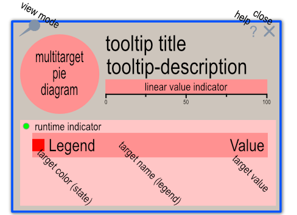
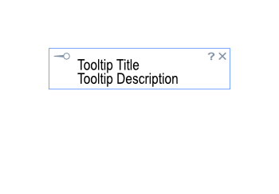

SmartTooltip это продвинутый виджет, позволяющий реализовать отображение подсказок на веб странице. Умеет автоматически регистрироваться,
на лету подстраивается под контекст, умеет отображать несколько шаблонов и имеет простой API.
На данный момент реализовано несколько внутренних шаблона:
"pie",
"simple",
и
,
показанные на рисунке. Выбор шаблона определяется опциональным параметром options.template.
Значением этого параметра может быть либо название предопределенного шаблона, либо полное имя файла в формате SVG, в котором реализован требуемый заказчику шаблон. Предполагается, что шаблоны будут поставляться в комплекте с виджетом.
Назначение отдельных частей шаблонов описано ниже.
 
title.value".
Формат определяется опциональным параметром "title.titleFormat". Его значение по умалчанию - $TITLE$
обозначающее вывод параметра "title.tooltip" или "title.text" или "title.name".title.value".
Формат определяется опциональным параметром "title.descrFormat". Значение по умолчанию: $DESCR$, обозначающее вывод
параметра "title.descr".title.value" в виде полоски, окрашенной в цвет,
определяемый параметром "title.color" или "title.status". title.value" меньше, либо равно 100.
Любое значение больше 100 интерпретируется как абсолютное число и масштабируется на шкале, при наличии параметра "title.maxValue".
При отстутствии этого параметра, значение считается максимумом и отображается соответствующим образом на шкале.title.value" линейный индикатор не отображается.target.value".
Цвет сегмента определяется параметром "target.color". При наличии параметра "target.link" тип курсора, проходящего над соответствующим сегментом,
меняется на указатель и клик левой кнопкой мыши приведет к переходу на указанный ресурс. Сегменты диаграммы сортируются в зависимости от параметра "options.sortby",
который может принимать значения, описывающие параметр, по которому осуществляется сортировка, такие как: 'asis', 'name', 'value', 'color', 'state'. Значение 'asis' отключает сортировку.options.isRun" и
может быть красным при значении 0 или зеленым, при значении 1.target.color".
Текст по центру - параметром "target.legend" (по умолчанию), либо опциональной форматирующей строкой "target.legendFormat".
Текст справа - параметром "target.value" (по умолчанию), либо опциональной форматирующей строкой "target.legendValFormat".options.frameScale" определяет общий размер окна подсказки и может варьироваться от 1 до 0. По умолчанию используется значение 0.8 На практике, значения меньше 0.5 неприменимы.options.cssVars". По умолчанию, эти параметры имеют следующие значения:
--sttip-var-font-family: 'Arial Narrow', 'DIN Condensed', 'Noteworthy', sans-serif;
--sttip-var-font-stretch: condensed;
--sttip-var-font-color: #666;
--sttip-var-font-size: 12px;
--sttip-var-scale-size: 12px;
--sttip-var-legend-size: 18px;
--sttip-var-title-size: 20px;
--sttip-var-descr-size: 18px;
--sttip-var-run-color: #0f0;
--sttip-var-stop-color: #f00;
--sttip-var-def-color: #666;
--sttip-var-frame-fill: #fff;
--sttip-var-frame-opacity: 0.95;
--sttip-var-border-color: none;
--sttip-var-border-width: 2;
--sttip-var-border-radius: 2;
--sttip-var-legend-fill: #fff;
--sttip-var-legend-stroke: #666;
smart-ui-tooltip" в любом месте страницы,
либо посредством вызова статической функции "SmartTooltip.initTooltip(..)" или "SmartTooltip.showTooltip(..)" из секции JavaScript кода.
CustomProperties.registerElementsByIds(document, ['id', 'id']); передав ей текущий документ и массив id регистрируемых элементов, либоCustomProperties.registerElementsByClassName(document, ['className1', 'className2']); передав ей, в качестве второго параметра, массив имен классов.<script src="smarttooltip.js"></script>
<style> ...
.sttip-options-1 {
font-weight: bold;
cursor: pointer;
--sttip-template: simple;
--sttip-is-shadow: 1;
--sttip-start-from: float;
--sttip-var-frame-fill: pink;
--sttip-var-border-color: magenta;
--sttip-var-border-radius: 10;
--sttip-var-font-color: magenta;
--sttip-title-text-wrap: 360;
--sttip-title-text-align: justify;
--sttip-title-format: Tooltip text for $NAME;
} .... </style>
в секции body
<label id="e-01" class="ex sttip-options-1" data-sttip-linkto="url" data-sttip-uuid="uuid-e-01" data-sttip-name="e-01'">Element e-01</label>
<label id="e-02" class="ex sttip-options-1" data-sttip-linkto="url" data-sttip-uuid="uuid-e-02" data-sttip-name="e-02'">Element e-02</label>
sttip-options-1" были ассоциированы с виджетом SmartTooltip со свойствами, описанными в стилях, а именно:
data-sttip-linkto", "data-sttip-uuid" и "data-sttip-name".
SmartTooltip, то инициализацию можно свести к минимуму, путем размещения на странице данного элемента. Просто добавьте в код страницы, следующий фрагмент:<smart-ui-tooltip className="sttip">Sorry, yout browser does not support custom elements.</smart-ui-tooltip>sttip".smart-ui-tooltip" в атрибуте "className".
.h3 {
--sttip-var-frame-fill: rgb(255, 220, 192);
--sttip-var-font-color: rgb(253, 127, 24);
--sttip-var-border-color: rgb(230, 134, 55);
--sttip-var-border-radius: 5;
}
data-sttip-tooltip"
SmartTooltip.initTooltip(..)" принимает два необязательных параметра "id" и "templateFileName".
При отсутствии параметров происходит загрузка встроенного шаблона окна подсказки, а при наличии параметров - асинхронная загрузка указанного шаблона (в SVG формате)
и привязка его к элементу страницы, определяемого по указанному "id".SmartTooltip.showTooltip(..)" принимает два обязательных параметра - "data" и "evt" и должна быть вызвана в теле обработчика
события "mouseover". Параметр "data" представляет собой объект следующей структуры:
var data = {
id: target identificator,
x: evt.clientX,
y: evt.clientY,
options: {
// the client rectangle coordinates of correspondent element.
// this coordinates will used for place 'the pinned' tooltip near this element
// you may specify here any screen coordinates for positioning SmartTooltip window
// only top and right parameters used for calculating currently.
// The position of tooltip window will be moved by 16 px at right side of specified 'right' parameter.
// In case of this parameter not specified, the 'pinned' tooltip will be positioned near mouse cursor (=6 pixels to right and down).
position: '',
// run indicator is a small circle near the legend. It's fill color is green, when this parameter equals true and red when false.
isRun: true / false
// SmartTooltip window will be scaled by specified factor before showing
frameScale: 0.6 - default
isShadow: 1, - enables shadows around of tooltip window. The default value is 1
// Sort data by specified parameter. Can be one of the next parameters:
// "asis" - don't sort, default
// states/state - sort by state or colors (in case of state is not exists),
// values/value - sort by value,
// colors/color - sort by color,
// names/name - sort by legend or name,
// any other word - sort by this "word" parameter. For example: link
// Note: This option parameter may be specified only once. After this it will be used for all tooltips on the page
// If you want to show different tooltips with different sort orders, please specify this parameter each time!
sortBy: "asis",
sortDir: 1, - sorting direction parameter. the default value is '1', wich means from low to high. Possible values: -1, 0, 1
titleTextWrap: 0, - sets the line width (line-width attribute) for wrapped text. in case of 0 the width attribute from <rect id="tooltip-frame"> in template is used. the defaul is 0
titleTextAlign: 'center', - align for wrapped text. One from 4 values: 'left', 'center', 'right', 'justify'. The default is 'center'
descrTextWrap: 0, - sets the line width (line-width attribute) for wrapped text. in case of 0 the width attribute from <rect id="tooltip-frame"> in template is used. the defaul is 0
descrTextAlign: 'justify',- align for wrapped text. One from 4 values: 'left', 'center', 'right', 'justify'. The default is 'justify'
template: 'pie', - default value for this property is 'pie', wich means the using of internal SmartTooltip pie template definition.
The custom template may be specified as full url name, for example 'templates/vert_bars.svg'. The case of specified name without
extension means an internal name of template. Currently only 'pie' and 'simple' are implemented. May be changed by host custom element also.
startFrom: 'float' - this property describes one of three started showing modes: 'float', 'pinned', 'fixed'. By default it equals 'float' and this means
that user may change it as he wish. In case of optional parameter 'options.showMode', or attribute 'show-mode' specified,
user cannot change apperance of tooltip window!
showMode: '' - optional parameter, describes show mode and overides 'start-from'
delayOut: 250, - the time delay interval when tooltip window will be hided. The default is 250 (ms). This delayed interval will counted after mouse pointer will out from the element
delayOn: 2000, - the time delay interval when tooltip window will disappear from screen after non-activity of mouse pointer. The default value is 2000 (ms)
// The next section of parameters allows you to override the look and fill of SmartTooltip window for each specific element on the HTML page
// There is no need to define all the style variables, you can specify only some of them or do not specify anything at all, if you like the look and fill of the built-in template.
cssVars: {
"--sttip-var-font-family": "'Arial Narrow', 'DIN Condensed', 'Noteworthy', sans-serif";
"--sttip-var-font-stretch": "condensed",
"--sttip-var-font-color": "#9dc2de",
"--sttip-var-font-size": "12px",
"--sttip-var-scale-size": "12px",
"--sttip-var-legend-size": "22px",
"--sttip-var-title-size": "30px",
"--sttip-var-descr-size": "28px",
"--sttip-var-run-color": "#0f0",
"--sttip-var-stop-color": "#f00",
"--sttip-var-def-color": "#666",
"--sttip-var-frame-fill": "#fff",
"--sttip-var-frame-opacity": "0.95",
"--sttip-var-border-color": "none",
"--sttip-var-border-width": "2",
"--sttip-var-border-radius": "2",
"--sttip-var-legend-fill": "#fff",
"--sttip-var-legend-stroke": "#666"
}
},
title: {
uuid: 'unique target id',
legend: 'Title legend',
name: 'Title legend may be defined here also',
descr: 'Description',
value: `By default this value will be shown in description line (under title). But by using descrFormat and/or titleFormat
you can change that behavior. By default, it is assumed that the value of this parameter is specified in percents.
In case you want to display the actual value, add the "valueMax" parameter to correctly calculate the length of the indicator.`,
max: null,
value: 'This text will be shown as description',
color: 'state color',
link: 'external URL',
legendFormat: 'title string with internal variables, such as $VALUE$, $NAME$, $DESCR$, ...',
legendValFormat: 'same as legendFormat string but for second string'
},
targets: [
{
uuid: 'unuque target id',
legend: 'Title legend',
name: 'Title legend may be defined here also',
descr: 'Description'
value: 'This text will be shown as description',
color: 'state color',
link: 'external URL',
parent: 'parent UUID',
legendFormat: 'legend stroke formating string with internal variables, such as $VALUE$, $NAME$, $DESCR$, ...',
legendValFormat: 'legend value formating string'
},
{}, ...
]};SmartTooltip.showTooltip(..) инициализирует, если необходимо элемент SmartTooltip, встроенным шаблоном.SmartTooltip.moveTooltip(evt) и SmartTooltip.hideTooltip(evt) вызываются из тела обработчика событий mousemove mouseout соответственно.